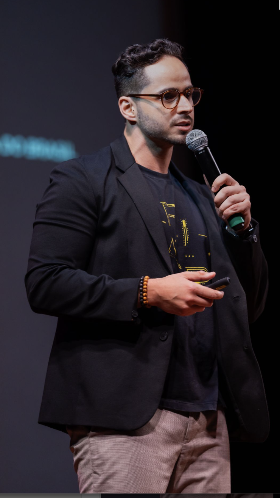
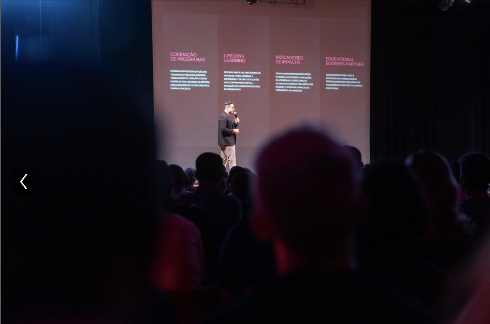
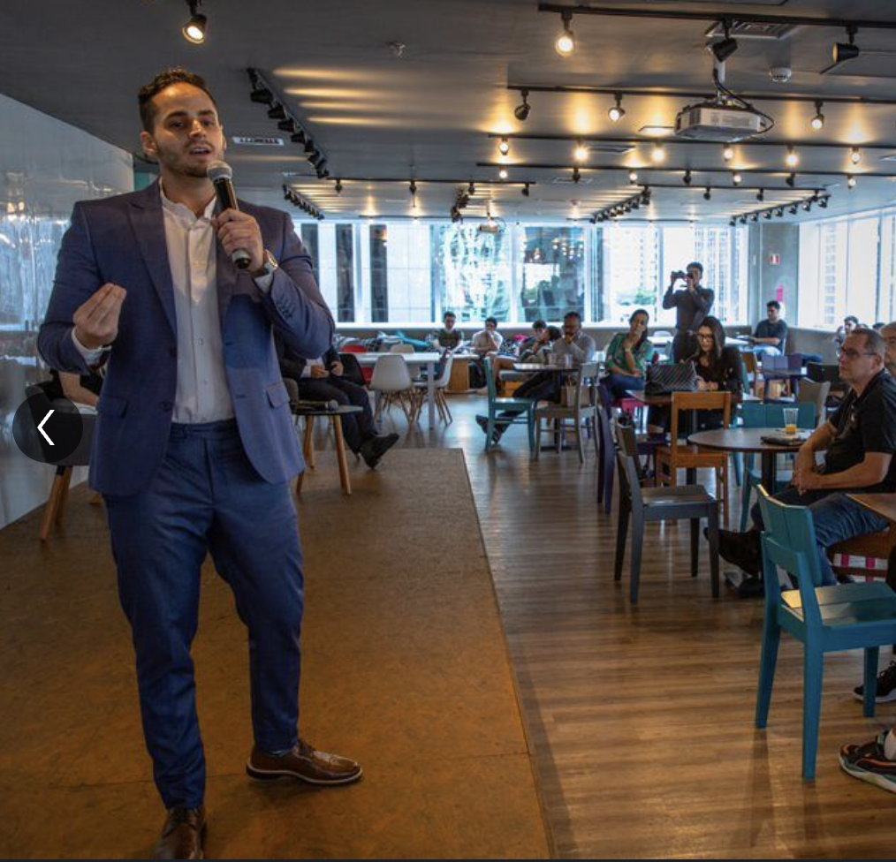
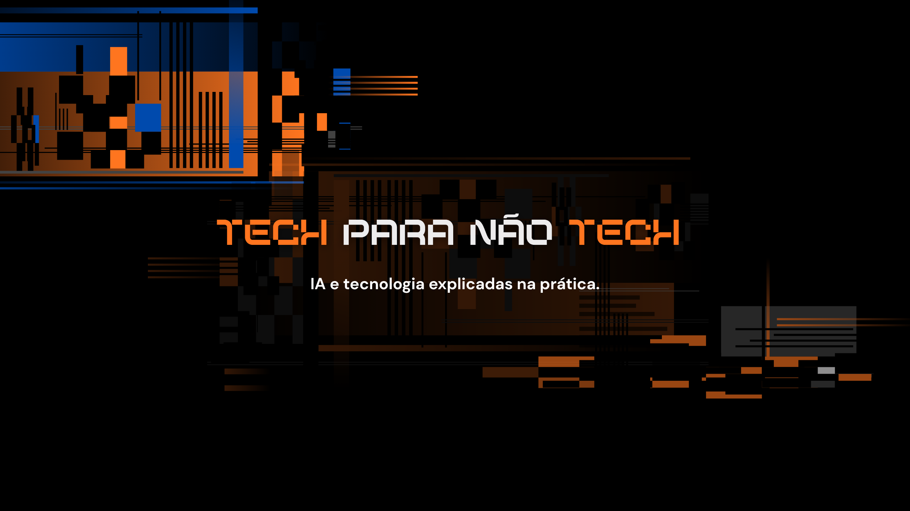

Liderança Corporativa
Estruturação de programas de desenvolvimento de líderes alinhados à estratégia organizacional e às demandas do mercado.
Senior Account Executive · B2B
Especialista em desenho de jornadas corporativas em Liderança, Dados e Inteligência Artificial. Criador do projeto Tech para não Tech.
anos em vendas consultivas
atendendo grandes empresas de diferentes segmentos
Vendas B2B · IA · Liderança · Carreira

Executivo comercial com sólida experiência em vendas consultivas e educação corporativa.
Atua no desenho e estruturação de jornadas em Liderança, Dados e Inteligência Artificial para grandes organizações. Possui ampla experiência na negociação de projetos educacionais complexos, relacionamento com múltiplos stakeholders e acompanhamento da adoção prática das competências pelas áreas de negócio.
Também é criador do projeto Tech para não Tech, onde traduz tendências tecnológicas em linguagem acessível para profissionais de todas as áreas, democratizando o acesso ao conhecimento sobre IA, dados e transformação digital.
Formação Acadêmica
Setores atendidos
Soluções estratégicas para o desenvolvimento de competências que impulsionam resultados reais nos negócios.
Estruturação de programas de desenvolvimento de líderes alinhados à estratégia organizacional e às demandas do mercado.
Jornadas educacionais em analytics, machine learning e IA aplicada, traduzidas para equipes de negócio e liderança.
Negociação e estruturação de programas educacionais complexos para grandes corporações, do diagnóstico à entrega.
Gestão estratégica de múltiplos stakeholders, com foco em confiança, alinhamento e construção de parcerias de longo prazo.
Programas de requalificação e atualização de competências para profissionais em contextos de transformação digital acelerada.
Acompanhamento contínuo da evolução dos programas e apoio na aplicação prática das competências desenvolvidas pelas equipes.
Uma seleção de projetos estratégicos, palestras e iniciativas de conteúdo em educação corporativa.


Aplicação prática de inteligência artificial em decisões estratégicas e operações empresariais.
Como elevar a performance individual e coletiva com o apoio de ferramentas de inteligência artificial.
Liderança que constrói uma cultura contínua de aprendizado em IA e tecnologia.
Desenvolvimento e estruturação de equipes comerciais para resultados consistentes.
Construção de uma marca pessoal sólida e autêntica com apoio da tecnologia.
A arte de vender através de narrativas que conectam, engajam e geram valor.

Conteúdo que traduz tecnologia para profissionais de todas as áreas.
Vídeos, posts e cortes que explicam IA e dados de forma acessível.
Tech para não Tech: conteúdo sobre IA, dados e tecnologia em linguagem acessível.
@adrianomischiatti — conteúdo estratégico sobre carreira, tecnologia e educação corporativa.
Artigos e reflexões sobre liderança, IA e o futuro do trabalho para executivos.
Temas em destaque: IA, Vendas, Negociação, Protagonismo e Carreira — para eventos e empresas.
Acompanhe conteúdo sobre tecnologia, inteligência artificial, liderança e educação corporativa em múltiplas plataformas.
Informações essenciais para parcerias, convites para palestras e colaborações estratégicas.
Adriano Mischiatti é Senior Account Executive de Programas e Experiências B2B, especializado no desenho de jornadas corporativas em Liderança, Dados e Inteligência Artificial. Com mais de 15 anos em vendas consultivas, atua com grandes organizações dos setores bancário, financeiro, varejo, indústria e tecnologia. É também criador do projeto Tech para não Tech, que democratiza o acesso ao conhecimento tecnológico para profissionais de todas as áreas.